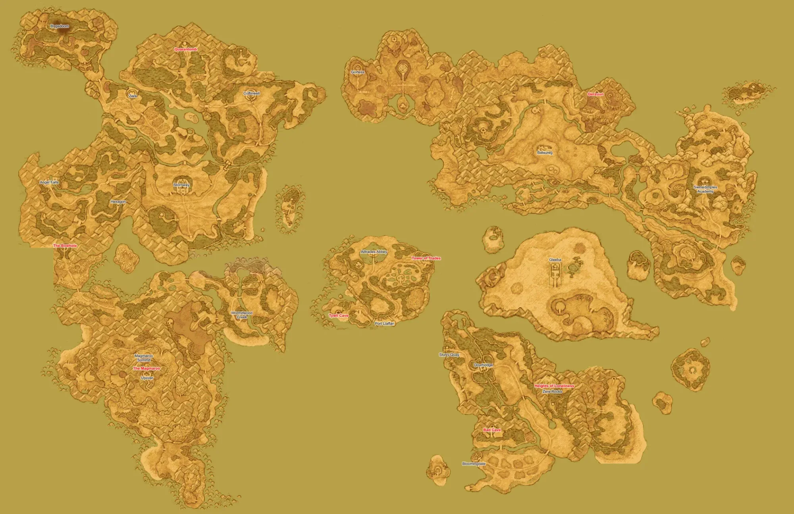

Charting The Protectorate
The world of Althelas spans diverse continents, from the Observatory above to the mortal kingdoms below. These maps chronicle your journey as Sentinels gathering benevolessence across The Protectorate.
Note: Maps will be updated as you discover new locations. Current progress shows your path from Angel Falls through Stornway to your current destination at Zere.
🗺️ The Protectorate - Full World Map
The known world, showing the mortal realm beneath the Observatory. Based on Dragon Quest IX: Sentinels of the Starry Skies.

The complete world of Althelas - The Protectorate
THE OBSERVATORY
(Fallen from the sky - now in the mortal realm)
↓ Starflight Express (inactive) ↓
WESTERN REGIONS
→ South-central region
The Hexagon
→ West of Angel Falls
Alltrades Abbey
→ Northwest (vocation changes)
Western Stornway
→ Mountain pass region
CENTRAL & EASTERN REGIONS
→ East of Angel Falls
The Lakewood (Wight Knight Battle)
→ North of Stornway
Zere (CURRENT DESTINATION)
→ Northwest of The Lakewood
Doomingale Forest (Next)
→ North of Zere
LOCATIONS YET TO EXPLORE
🧭 Your Journey So Far
Tracking the Sentinels' path from the Observatory's fall to your current quest.
Regional Map - Stornway to Zere
Detailed view of your current region showing the path from Stornway to Zere.
═══════════════════════════════════
║ DOOMINGALE FOREST (UPCOMING) ║
║ [Brigadoom Ruins] ║
═══════════════════════════════════
↑
│
│ North
│
┌──────────────────────────┐
│ ZERE │
│ (Heart-Shaped Town) │
│ → Find Tongs for Hobbes! ← │
└──────────────────────────┘
↑
│ Northwest
│
┌──────────────────────────┐
│ The Lakewood │
│ (Wight Knight Battle) │
│ Defeated │
└──────────────────────────┘
↑
│ North
│
┌──────────────────────────┐
│ STORNWAY │
│ (Kingdom Capital) │
│ Princess Still Missing │
└──────────────────────────┘
↑
Western Stornway
Mountain Pass
↑
┌──────────────────────────┐
│ ANGEL FALLS │
│ (Starting Village) │
└──────────────────────────┘
Travel Information
Direction: North
Time: Short journey
Terrain: Safe path
Direction: Northwest
Time: Short journey
Terrain: Safe path
Direction: North
Time: Moderate
Terrain: Dangerous forest
Direction: Center of forest
Time: Long (dungeon)
Terrain: Ruins, poison swamps
☁️ The Realm Above - Celestial Geography
The divine realms that exist above the mortal world on the celestial plane.
THE REALM OF THE ALMIGHTY
The highest divine realm. Current status: Unknown
THE OBSERVATORY
Home of the Celestrians
STATUS: Fallen to mortal realm after an apparent attack
The Starflight Express can return you here once enough benevolessence is gathered
THE MORTAL REALM
The Protectorate - Where mortals dwell
Where you must gather benevolessence to return home
Cartographer's Notes
The Protectorate is a vast world with many secrets yet to discover. As you gather benevolessence and help the people of the realm, new locations will open to you. Some places are hidden, others guarded by powerful enemies, and still others exist in different dimensions accessible only through special means.
The attack on the Observatory has changed the world, . Divine barriers have weakened, ancient evils stir, and the fate of both the mortal and celestial realms hangs in the balance. Your journey as Sentinels will take you across all corners of The Protectorate—and perhaps beyond.
Special Locations
The Starflight Express: Your means of returning to the Observatory. Currently requires
more benevolessence to activate.
Nerys' Map Notes
Maps will be updated as the party progresses. Future additions will include:
- Regional maps for new areas (Coffinwell, Gleeba, etc.)
- Quest-specific location markers
- Custom map images (will be added as the campaign progresses... I'm working on it!)
Safe travels, Sentinels. May the stars guide your path.
- Nerys